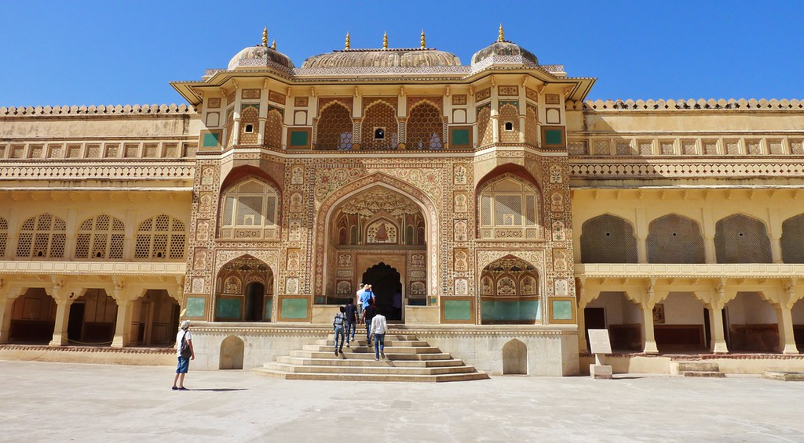
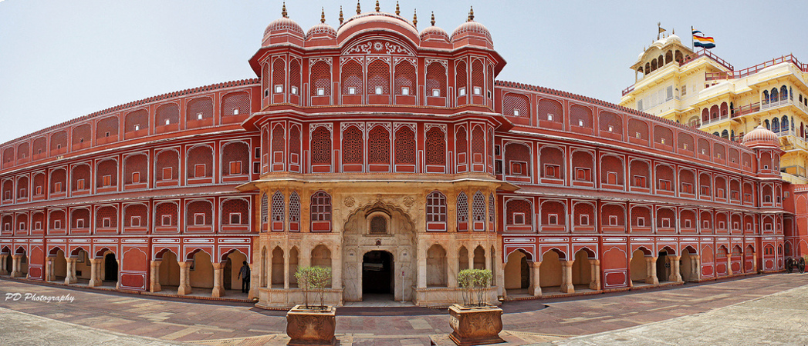
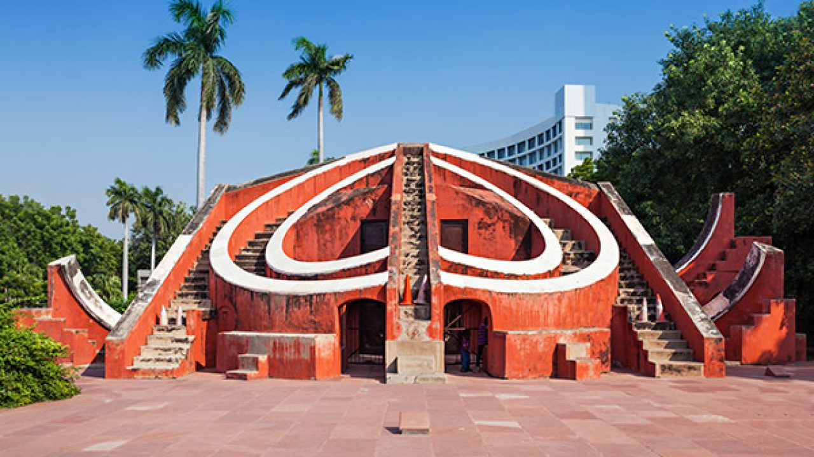

Amber Fort

Amber Fort, situated 11 kms from Jaipur, is a fort built with great artistic taste. Cradled on the top of a hill forming a beautiful reflection in Maotha Lake, it is popularly known as Amer Fort.Amer Fort is clad in pink and yellow sandstone and is a part of an extensive complex. Built by one of the most trusted generals of Akbar, Maharaja Man Singh I in the year 1592, Amer Fort served as the main residence of the Rajput Rulers.
City Palace

City Palace in Jaipur is one of the most famous tourist attractions located in the old part of the city. Built by Maharaja Sawai Jai Singh during the years 1729 to 1732, the vast complex of the palace occupied one-seventh of the walled city. The palace is divided into a series of courtyards, buildings and gardens including the Chandra Mahal and the Mubarak Mahal. The museum showcases various things belong to the royal heritage of the City Palace.
Hawa Mahal

The massive edifice of Hawa Mahal stands at the intersection of the main road in Jaipur, Badi Chaupad and was built by Maharaja Sawai Pratap Singh in the year 1799. Hawa Mahal derives its name from its unique structure, which is a mesh of small windows that allowed cool wind to enter the palace and hence kept the palace comfortable during the hot summer months.
Jantar Mantar

Jantar Mantar in Jaipur is the largest stone astronomical observatory in the World. It is located just next to the city palace of Jaipur in Rajasthan. Built during the period between 1727 and 1733, the Jantar Mantar is still in a running condition and it stands as a witness regarding the wisdom of former age.